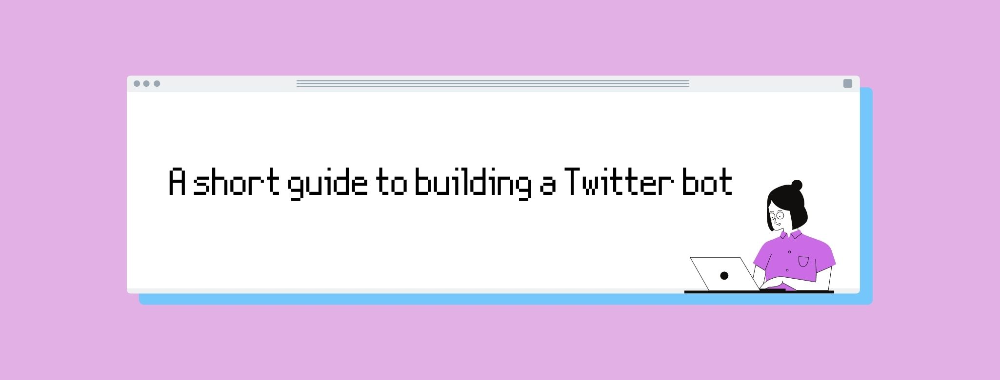
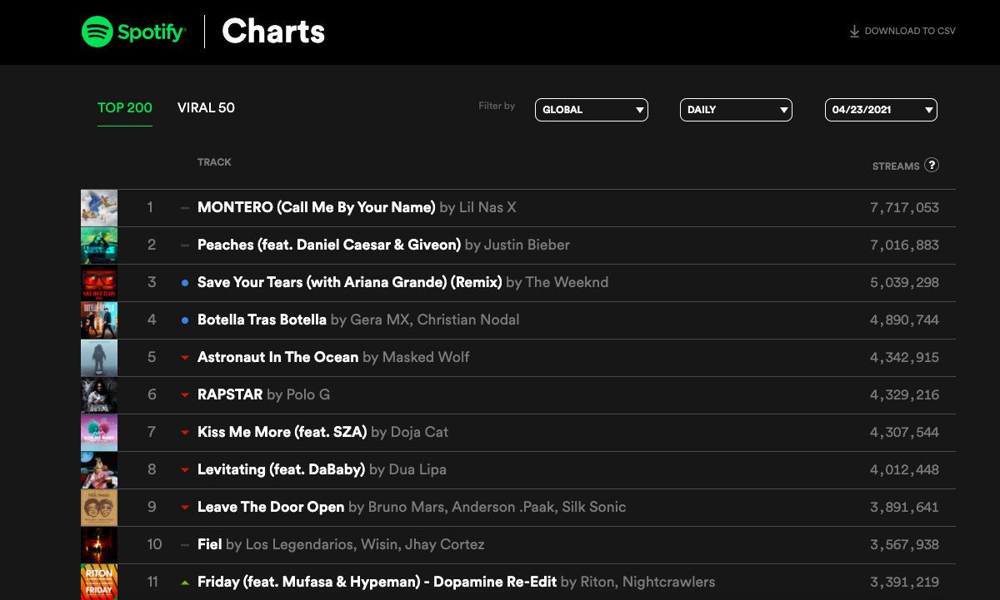
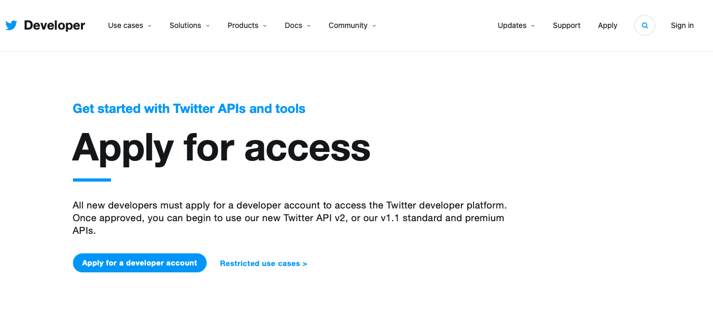
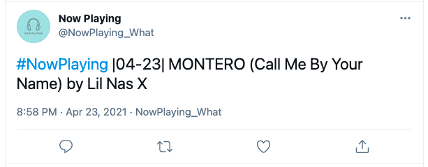

I recently discovered the fascinating world of Twitter bots (what's that?). Isn't it amazing that a simple computer program can post random stuff on Twitter all by itself? It probably isn't, considering that we're in the middle of a tech revolution, but they're fun to build, so that's a good enough reason to waste your time creating one!
In this guide, I explain you how to build a Twitter bot from scratch step by step. The only pre-requisite is that you know a little bit of Python.
There are 5 steps you have to follow in order to build your own Twitter bot.
Write a Python program that generates the text your bot will post on Twitter. This is self-explanatory: if there's no message, there's no tweet.
Create a Twitter developer account in order to access the Twitter API so you can set up your bot. This is also self-explanatory: we need a Twitter account in order to be able to tweet.
Link your Python program (on your computer) to your Twitter account (on the internet). Connecting these two things is key so your bot can 'come to life'.
Run your Python program once it's linked to Twitter so it can start tweeting.
Sit back and observe. Go to bed feeling fulfilled.
I go over each of these steps in the remainder of the post.
Ok, so this is the most creative part of the process! In this step, you get to decide what your bot is going to be tweeting about and write the code for it.
In my case, I decided to build a bot that would tweet the most played song in the world each day. Now, you might be thinking: "Sounds good, but how do you know what's the most played song in the world on a given day?". The short answer is: I don't know. But Spotify does! In fact, they have a website where they publish a lot of data they gather from their listeners (e.g., most played songs, most viral songs...). The website is called Spotify Charts, and it's what I'll be using to develop my Python program.

In order to 'visit' that website using your Python program, you can use the following code:
url = "https://spotifycharts.com/regional/global"
headers = {'User-Agent': 'Mozilla/5.0 (Windows NT 6.1; WOW64) AppleWebKit/537.36 (KHTML, like Gecko) Chrome/56.0.2924.76 Safari/537.36'}
webpage = requests.get(url, headers=headers)
The first line of code, url, tells Python what website we want to access, and the second line, headers, tells Python that we want to access it as if we were using an actual internet browser. Now, the third line is where the magic happens: we put both things together and Python 'gets a copy' of the website, which is stored in the variable webpage. In order to be able to run this code, make sure you import the requests library.
Once we have a copy of Spotify Charts, we need to make it 'readable' so that Python can do stuff with it. To do this, I used the BeautifulSoup library. If you're not familiar with that library, The Programming Historian has a wonderful intro post.
The code below reads in the website using HTML and then keeps the table that contains information about the most played songs that day.
soup = BeautifulSoup(webpage.text, "html.parser")
songs_list = soup.find("table", {"class":"chart-table"})
Since we only need the first song in the table (aka. the most played one), I used the following code to extract that info from the table and to "clean" it (by removing HTML tags):
# Function to get song info
def get_song(songs_list):
table_rows = songs_list.findChildren('tr')[1]
track_data = table_rows.findChildren('td')[3]
return track_data
# Function to get song title and artist
def song_info(track_data):
title_data = track_data.findChildren('strong')[0]
artist_data = track_data.findChildren('span')[0]
return (title_data, artist_data)
# Function to clean HTML text
def clean_text(html_text):
clean_re = re.compile('<.*?>|&([a-z0-9]+|#[0-9]{1,6}|#x[0-9a-f]{1,6});')
clean_text = re.sub(clean_re, '', html_text)
return clean_text
Lastly, I wrote another function to generate the daily tweet my bot would be posting on Twitter. The function simply puts everything together. However, since Twitter does not allow to post the exact same tweet twice and it's pretty likely for a song to be the most played one for several days in a row, I customized each tweet further by adding the date.
# Function to get date
def get_date():
today = date.today()
today = str(today)
today_date = today[5:10]
return today_date
# Function to write tweet
def write_tweet(song_info, today_date):
title_data = song_info[0]
artist_data = song_info[1]
song_title = str(clean_text(title_data.text))
song_artist = str(clean_text(artist_data.text))
tweet = "#NowPlaying |" + today_date + "| " + song_title + " " + song_artist
return tweet
To create a Twitter account that would let you set up your bot, visit this website and follow the steps.

Once your account is activated, you'll need to copy your access keys. More specifically, you'll need your API Key, your API Secret Key, your Access Token, and your Access Token Secret. You can think of these as passwords that are automatically linked to your account and that you'll bot will have to use in order to be able to tweet from your terminal.
Note: it's important that you don't share these keys with anyone, since otherwise, your Twitter account could be hacked.
We're almost done! In order to link your Python program to your Twitter account, you'll have to use the code below. I have omitted my actual keys for privacy, so you would have to replace those with yours.
CONSUMER_KEY = 'Your key goes here'
CONSUMER_SECRET = 'Your key goes here'
ACCESS_KEY = 'Your key goes here'
ACCESS_SECRET = 'Your key goes here'
auth = tweepy.OAuthHandler(CONSUMER_KEY, CONSUMER_SECRET)
auth.set_access_token(ACCESS_KEY, ACCESS_SECRET)
api = tweepy.API(auth)
To be able to run this code, you'll have to import the tweepy library, which is basically a Python library to access the Twitter API.
Lastly, you can add the code chunk that will write your tweet and post it every day.
tweet = write_tweet(song_info(get_song(songs_list)), get_date())
while True:
this_tweet = tweet
if len(this_tweet) <= 140:
api.update_status(status=this_tweet)
time.sleep(86400) # number of seconds in a day
If you made it here, good job! The fourth step of the process is to make your bot tweet for the first time. So, open your terminal and go to the directory where your .py file containing the code is located (you can use cd for this). Once there, run your code (python yourfilename.py) and go visit your bot's Twitter account to see its first tweet ever.
Congrats, your tweet has been published! Your Twitter bot works!
A new tweet will be published every 24 hours as long as you don't close your terminal. In fact, you don't even have to tweet once a day, you can set up your bot the way you want and publish as many tweets as you'd like.
You can see one of the tweets my bot produced below:

It includes a popular hashtag, #NowPlaying, the date when it was published, |04-23|, as well as the title of the song (and artist) that was played the most that day, MONTERO (Call Me By Your Name) by Lil Nas X. And that's it, that's the tweet!